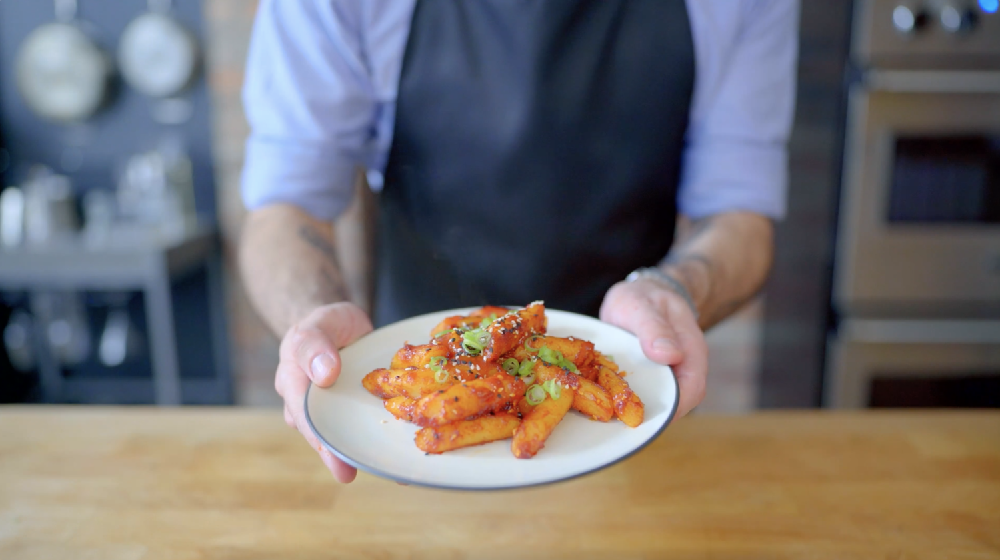

Tteokbokki

Description
Tteokbokki is one of my all-time favorite foods: spicy, saucy n' chewy, it's the perfect way to get your carbs in. Provided you can get your hands on its 4 primary ingredients, it's also super-easy to make!
Ingredients
- 1 Tbsp dashi flakes
- 3 Cups water + more as needed
- 1 lb pre-made rice cakes
- 1/4 Cup gochujang
- 1/2 - 2 tsp gochugaru
- Optional: 1 Tbsp sugar
- 1/3 Cup scallions, sliced
Steps
- Combine the dashi flakes and the water in a large high-sided skillet.
- Fill a large bowl with water and soak the rice cakes in the broth for 10 minutes.
- Drain the rice cakes on a paper towel and then transfer them to a bowl until ready to use.
- Bring the broth to a boil.
- Meanwhile, combine the gochujang, gochugaru, and sugar (if using) in a small bowl. Mix until a paste forms.
- Add the paste to the heated broth.
- Once the sauce is at a simmer, add the rice cakes and cook for 7-10 minutes. Constantly stir until the sauce has thickened.
- Garnish with sliced scallions.